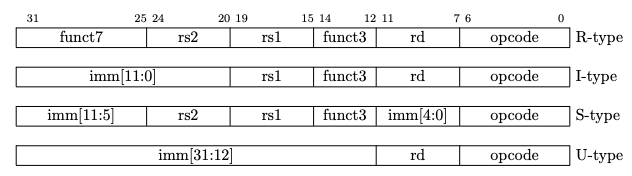
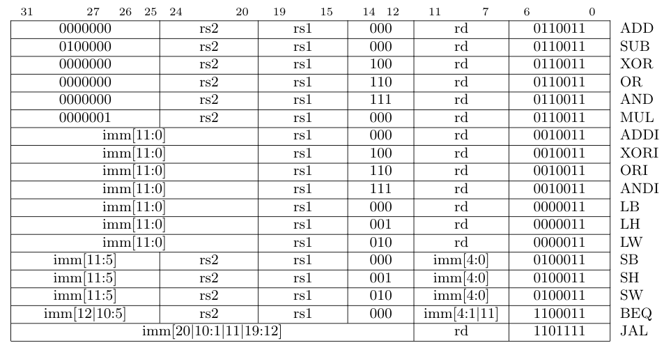
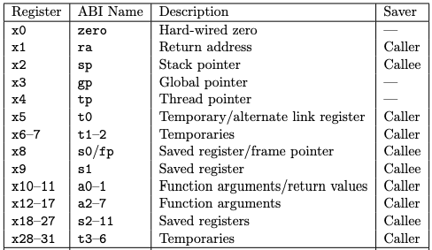

DECODE Stage¶
This stage is the one that decodes de instructions, and manages the register file.
Components¶
Instruction format¶
Instructions are 32 bits long, and are 32 bit aligned in memory, unaligned memory access should raise an exception.
The RISC-V specification document, defines four types of core instruction formats: R, I, S, and U (Section 2.2).
The complete instruction set is defined on Chapter 19, the lower two bits of the opcode (opcode[1:0]) are always set to 1.
The subset of RISC-V instruction used in this project, and its encoding, are on the following image:
Registers¶
There are 32 registers of 32 bits each one. The specific usage of each register is defined on Chapter 20 of the RISC-V specification document. In this project, floating point registers won’t be imlemented (?). The implementation details of the register file are described here.
